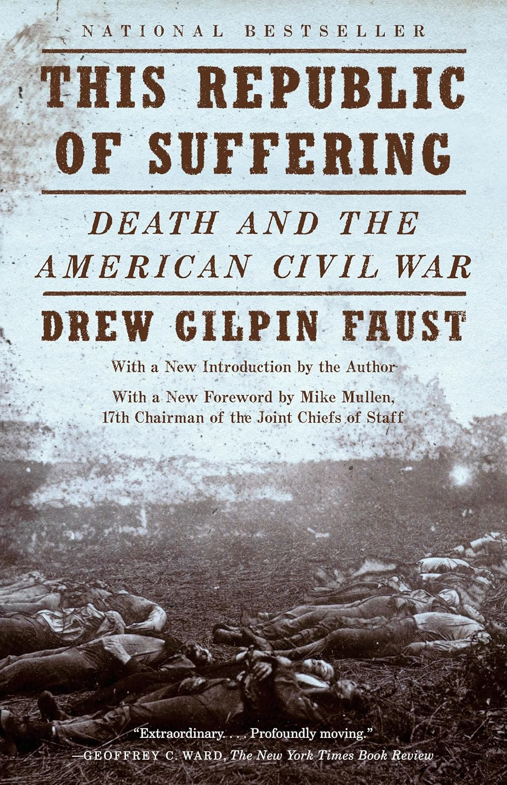

"This Republic of Suffering: Death and the American Civil War"

- Read on 2026-01-27
- Rating: ️️️️️
- Format: 🎧 (10 hours 54 minutes)
The amount of death in the Civil War made a significant impact on the nation. This book details that impact. Some of the stats are sobering. It's a lengthy book for such a topic, but the variety of subtopics around it are surprisingly interesting. From the adoption of embalming, to systematizing the treatment of fallen soldiers, and the religious implications of the same God for both sides of a war. I know many in the South were simply serving their "country", but I loved this quote from Frederick Douglass on memorializing both sides:
"We are sometimes asked in the name of patriotism to forget the merits of this fearful struggle, and to remember with equal admiration those who struck at the nation’s life, and those who struck to save it—those who fought for slavery, and those who fought for liberty and justice.
"I am no minister of malice. I would not strike the fallen. I would not repel the repentant, but may my right hand forget its cunning, and my tongue cleave to the roof of my mouth, if I forget the difference between the parties to that terrible, protracted and bloody conflict."
From this letter. Well said.
- Prior: Tried by War
- Next: I See You've Called in Dead